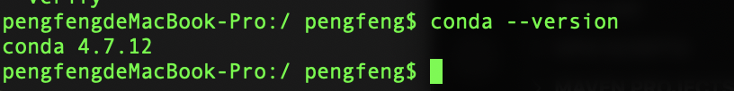
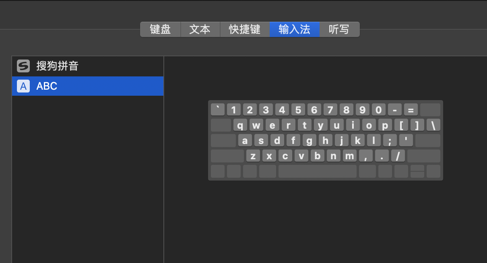

更新到Catalina
更新自期末前便一直有更新弹窗，最近终于更新到了Catalina，但是却遇到了点问题。
Get Conda work on macOs Catalina
Description
更新完成后在桌面出现了一个快捷访问的迁移的项目，里面有介绍和一个安全性文件夹（里面的文件被认为不安全）。而anaconda则赫然在列，看到飙红的Python interpreter（PyCharm），属实难顶。
Solution
我非常不愿意重装，正好也还没删除安全性里面的文件，于是找到
一个有效的解决方案。其中第三步不要直接复制，双引号会出错。当然在中间我也遇到了其他问题，比如最后一步出现bad interpreter: No such file or directory。

转而求助stackoverflow，发现相似问题。
这里总结下我的解决步骤：
1 | 1. Copy/Move the folder anaconda3 located in Relocated Items to /Users/<yourName>/ |
接下来便只需要重新选择Python interpreter了。
风扇狂转不停
风扇莫名其妙狂转太难受了，直接重启，但是过几天又重新上演悲剧。于是各种查问题，最后发现是输入法？？？
打开键盘偏好设置，把输入法删得只剩英文，下载一个酷狗输入法，一个多月了，目前状态良好。

升级后的其他问题
遇到再更。
鼠年要平安快乐！